Autores: Charles R. Qi, Hao Su, Kaichun Mo, Leonidas J. Guibas (Stanford, CVPR 2017)
arXiv: 1612.00593
Idea central
Primer trabajo que aplica deep learning directamente sobre nubes de puntos (sin voxelización ni proyecciones). Resuelve el problema de la invariancia a permutaciones usando una función simétrica simple: max-pooling.
Diseño
Arquitectura sorprendentemente simple:
Input (N×3) → MLPs por punto independientes → max-pool global → MLP → output
- Cada punto se procesa de forma idéntica e independiente (shared MLP).
- Se agregan todas las features con max-pooling simétrico → vector global invariante al orden.
- Para clasificación: MLP sobre el vector global.
- Para segmentación: se concatena la feature global con la local de cada punto.
Añade un T-Net (mini-PointNet) que aprende una transformación afín de los puntos para canonicalizar la entrada.
Análisis teórico
- PointNet puede aproximar cualquier función continua sobre conjuntos.
- La red aprende a resumir la nube con un conjunto escaso de "keypoints" ≈ esqueleto del objeto.
- Robusto a perturbaciones, inserción de outliers y borrado de puntos (hasta ~50% de pérdida sin caída fuerte).
Resultados
- ModelNet40 (clasificación): ~89% accuracy, comparable o mejor que volumétricos y mucho más rápido.
- ShapeNetPart (segmentación de partes): SOTA.
- S3DIS / Stanford (semántica de escenas): supera baselines.
Limitación clave
PointNet trata cada punto independientemente hasta el pooling global → no captura estructura local.
Esto motiva el sucesor [[PointNet++]] que aplica PointNet jerárquicamente en regiones locales.
Aportes
- Primera red DL nativa sobre point sets.
- Demuestra que max-pooling simétrico es suficiente para invariancia a permutación.
- Define el patrón encoder → global feature → task heads reutilizado por casi toda la literatura posterior de point clouds.
Conexiones
- Base de [[PointNet++]], [[DGCNN]], [[VoxelNet]] (usa PointNet dentro de cada voxel).
- Punto de partida casi obligatorio en cualquier review de DL sobre point clouds (ver [[Review_DL_materiales_Choudhary_2022]]).
Figuras del Paper (24)

Figure 1. Applications of PointNet. We propose a novel deep net architecture that consumes raw point cloud (set of points) without voxelization or rendering. It is a unified architecture that learns both global and local point features, providing a simple, efficient and effective approach for a number of 3D recognition tasks.
Figure 1. Applications of PointNet. We propose a novel deep net architecture that consumes raw point cloud (set of points) without voxelization or rendering. It is a unified architecture that learns both global and local point features, providing a simple, efficient and effective approach for a number of 3D recognition tasks.
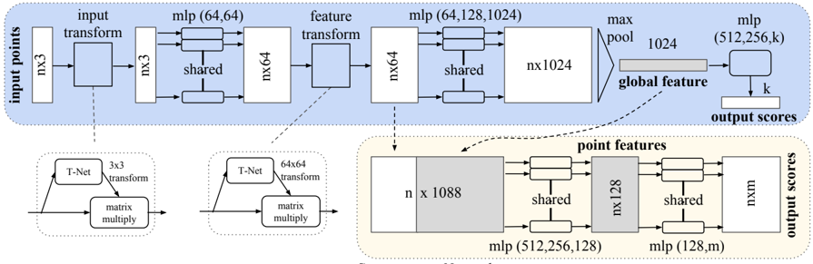
Sin caption
Figura en pagina 3.

Figure 3. Qualitative results for part segmentation. We visualize the CAD part segmentation results across all 16 object categories. We show both results for partial simulated Kinect scans (left block) and complete ShapeNet CAD models (right block).
Figure 3. Qualitative results for part segmentation. We visualize the CAD part segmentation results across all 16 object categories. We show both results for partial simulated Kinect scans (left block) and complete ShapeNet CAD models (right block).

Figure 4. Qualitative results for semantic segmentation. Top row is input point cloud with color. Bottom row is output semantic segmentation result (on points) displayed in the same camera viewpoint as input.
Figure 4. Qualitative results for semantic segmentation. Top row is input point cloud with color. Bottom row is output semantic segmentation result (on points) displayed in the same camera viewpoint as input.

Figure 5. Three approaches to achieve order invariance. Multilayer perceptron (MLP) applied on points consists of 5 hidden layers with neuron sizes 64,64,64,128,1024, all points share a single copy of MLP. The MLP close to the output consists of two layers with sizes 512,256.
Figure 5. Three approaches to achieve order invariance. Multilayer perceptron (MLP) applied on points consists of 5 hidden layers with neuron sizes 64,64,64,128,1024, all points share a single copy of MLP. The MLP close to the output consists of two layers with sizes 512,256.
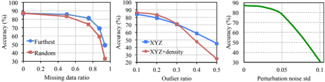
Figure 6. PointNet robustness test. The metric is overall classification accuracy on ModelNet40 test set. Left: Delete points. Furthest means the original 1024 points are sampled with furthest sampling. Middle: Insertion. Outliers uniformly scattered in the unit sphere. Right: Perturbation. Add Gaussian noise to each point independently.
Figure 6. PointNet robustness test. The metric is overall classification accuracy on ModelNet40 test set. Left: Delete points. Furthest means the original 1024 points are sampled with furthest sampling. Middle: Insertion. Outliers uniformly scattered in the unit sphere. Right: Perturbation. Add Gaussian noise to each point independently.
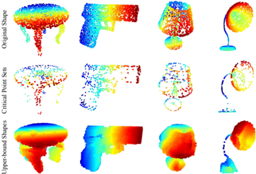
Figure 7. Critical points and upper bound shape. While critical points jointly determine the global shape feature for a given shape, any point cloud that falls between the critical points set and the upper bound shape gives exactly the same feature. We color-code all figures to show the depth information.
Figure 7. Critical points and upper bound shape. While critical points jointly determine the global shape feature for a given shape, any point cloud that falls between the critical points set and the upper bound shape gives exactly the same feature. We color-code all figures to show the depth information.
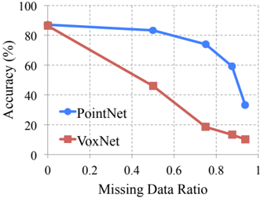
Sin caption
Figura en pagina 10.
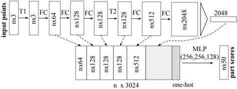
mlp (64,128,128) mlp (64,128,1024) input feature Classification Network Figure 9. Network architecture for part segmentation. T1 and T2 are alignment/transformation networks for input points and features. FC is fully connected layer operating on each point. MLP is multi-layer perceptron on each point. One-hot is a vector of size 16 indicating category of the input shape.
mlp (64,128,128) mlp (64,128,1024) input feature Classification Network Figure 9. Network architecture for part segmentation. T1 and T2 are alignment/transformation networks for input points and features. FC is fully connected layer operating on each point. MLP is multi-layer perceptron on each point. One-hot is a vector of size 16 indicating category of the input shape.
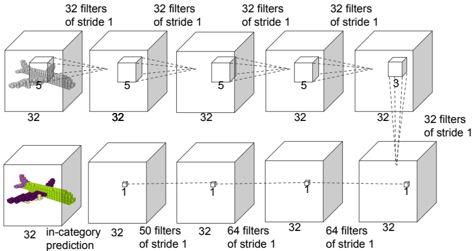
Figure 10. Baseline 3D CNN segmentation network. The network is fully convolutional and predicts part scores for each voxel.
Figure 10. Baseline 3D CNN segmentation network. The network is fully convolutional and predicts part scores for each voxel.
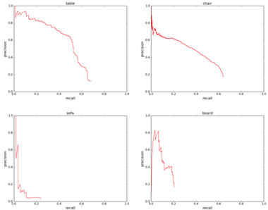
Figure 11. Precision-recall curves for object detection in 3D point cloud. We evaluated on all six areas for four categories: table, chair, sofa and board. IoU threshold is 0.5 in volume.
Figure 11. Precision-recall curves for object detection in 3D point cloud. We evaluated on all six areas for four categories: table, chair, sofa and board. IoU threshold is 0.5 in volume.
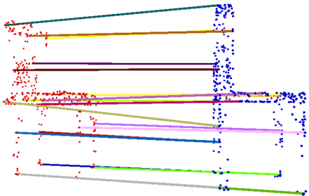
Figure 13. Shape correspondence between two chairs. For the clarity of the visualization, we only show 20 randomly picked correspondence pairs.
Figure 13. Shape correspondence between two chairs. For the clarity of the visualization, we only show 20 randomly picked correspondence pairs.
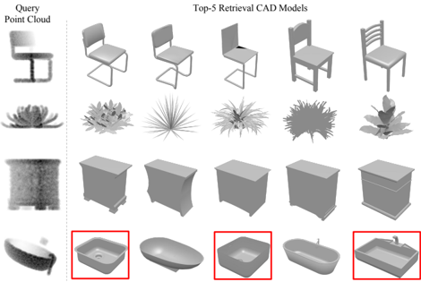
Figure 12. Model retrieval from point cloud. For every given point cloud, we retrieve the top-5 similar shapes from the ModelNet test split. From top to bottom rows, we show examples of chair, plant, nightstand and bathtub queries. Retrieved results that are in wrong category are marked by red boxes.
Figure 12. Model retrieval from point cloud. For every given point cloud, we retrieve the top-5 similar shapes from the ModelNet test split. From top to bottom rows, we show examples of chair, plant, nightstand and bathtub queries. Retrieved results that are in wrong category are marked by red boxes.
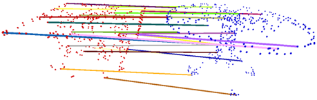
Figure 14. Shape correspondence between two tables. For the clarity of the visualization, we only show 20 randomly picked correspondence pairs.
Figure 14. Shape correspondence between two tables. For the clarity of the visualization, we only show 20 randomly picked correspondence pairs.
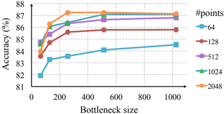
Figure 15. Effects of bottleneck size and number of input points. The metric is overall classification accuracy on ModelNet40 test set.
Figure 15. Effects of bottleneck size and number of input points. The metric is overall classification accuracy on ModelNet40 test set.
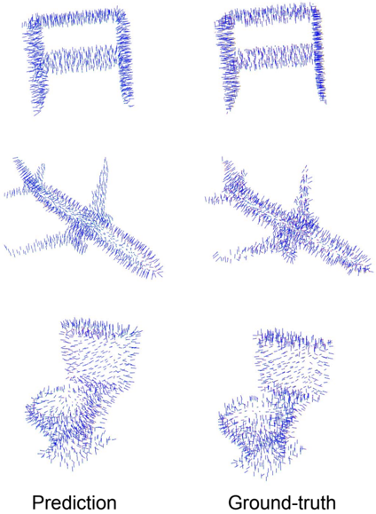
Figure 16. PointNet normal reconstrution results. In this figure, we show the reconstructed normals for all the points in some sample point clouds and the ground-truth normals computed on the mesh.
Figure 16. PointNet normal reconstrution results. In this figure, we show the reconstructed normals for all the points in some sample point clouds and the ground-truth normals computed on the mesh.
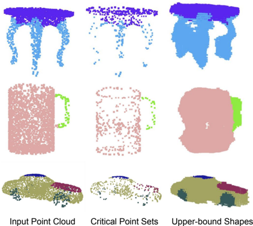
Figure 17. The consistency of segmentation results. We illustrate the segmentation results for some sample given point clouds S , their critical point sets C S and upper-bound shapes N S . We observe that the shape family between the C S and N S share a consistent segmentation results.
Figure 17. The consistency of segmentation results. We illustrate the segmentation results for some sample given point clouds S , their critical point sets C S and upper-bound shapes N S . We observe that the shape family between the C S and N S share a consistent segmentation results.
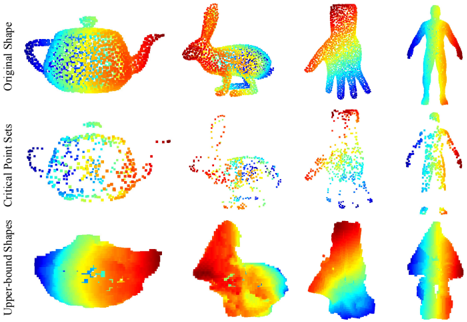
Figure 18. The critical point sets and the upper-bound shapes for unseen objects. We visualize the critical point sets and the upper-bound shapes for teapot, bunny, hand and human body, which are not in the ModelNet or ShapeNet shape repository to test the generalizability of the learnt per-point functions of our PointNet on other unseen objects. The images are color-coded to reflect the depth information.
Figure 18. The critical point sets and the upper-bound shapes for unseen objects. We visualize the critical point sets and the upper-bound shapes for teapot, bunny, hand and human body, which are not in the ModelNet or ShapeNet shape repository to test the generalizability of the learnt per-point functions of our PointNet on other unseen objects. The images are color-coded to reflect the depth information.
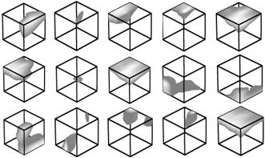
Figure 19. Point function visualization. For each per-point function h , we calculate the values h ( p ) for all the points p in a cube of diameter two located at the origin, which spatially covers the unit sphere to which our input shapes are normalized when training our PointNet. In this figure, we visualize all the points p that give h ( p ) > 0 . 5 with function values color-coded by the brightness of the voxel. We randomly pick 15 point functions and visualize the activation regions for them.
Figure 19. Point function visualization. For each per-point function h , we calculate the values h ( p ) for all the points p in a cube of diameter two located at the origin, which spatially covers the unit sphere to which our input shapes are normalized when training our PointNet. In this figure, we visualize all the points p that give h ( p ) > 0 . 5 with function values color-coded by the brightness of the voxel. We randomly pick 15 point functions and visualize the activation regions for them.
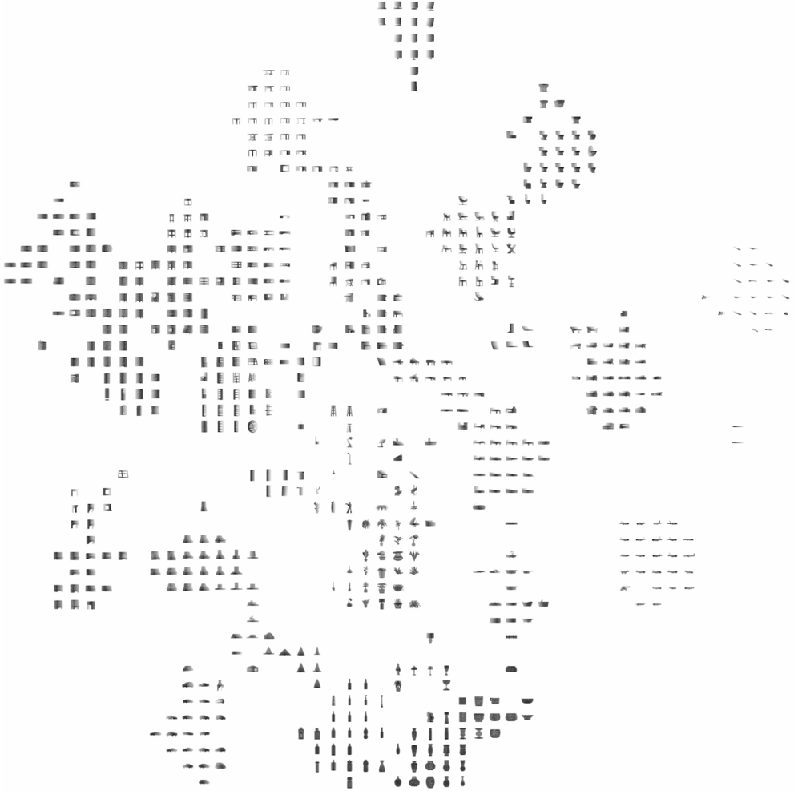
Figure 20. 2D embedding of learnt shape global features. We use t-SNE technique to visualize the learnt global shape features for the shapes in ModelNet40 test split.
Figure 20. 2D embedding of learnt shape global features. We use t-SNE technique to visualize the learnt global shape features for the shapes in ModelNet40 test split.
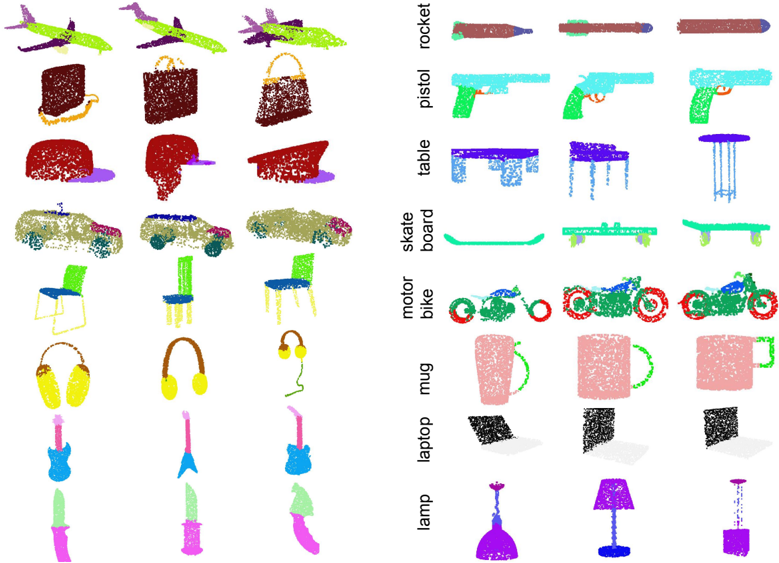
Figure 21. PointNet segmentation results on complete CAD models.
Figure 21. PointNet segmentation results on complete CAD models.
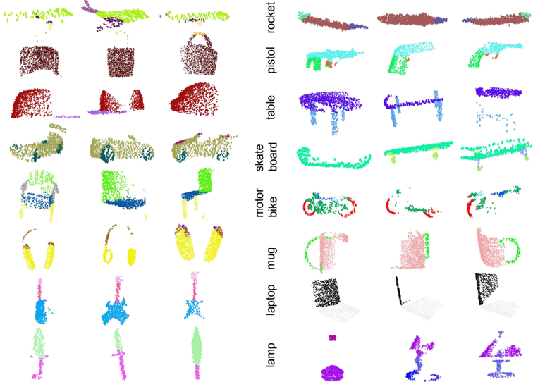
Figure 22. PointNet segmentation results on simulated Kinect scans.
Figure 22. PointNet segmentation results on simulated Kinect scans.
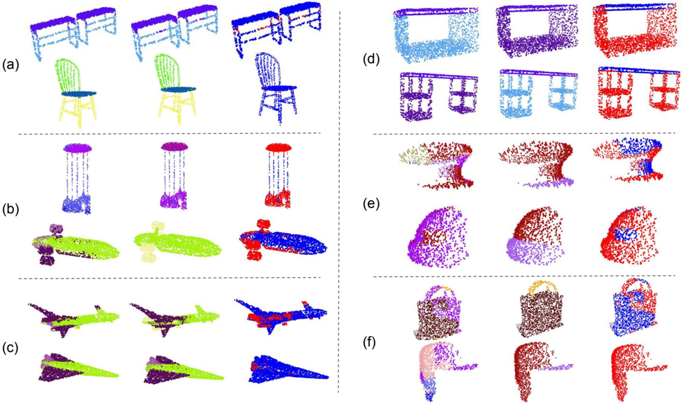
Figure 23. PointNet segmentation failure cases. In this figure, we summarize six types of common errors in our segmentation application. The prediction and the ground-truth segmentations are given in the first and second columns, while the difference maps are computed and shown in the third columns. The red dots correspond to the wrongly labeled points in the given point clouds. (a) illustrates the most common failure cases: the points on the boundary are wrongly labeled. In the examples, the label predictions for the points near the intersections between the table/chair legs and the tops are not accurate. However, most segmentation algorithms suffer from this error. (b) shows the errors on exotic shapes. For examples, the chandelier and the airplane shown in the figure are very rare in the data set. (c) shows that small parts can be overwritten by nearby large parts. For example, the jet engines for airplanes (yellow in the figure) are mistakenly classified as body (green) or the plane wing (purple). (d) shows the error caused by the inherent ambiguity of shape parts. For example, the two bottoms of the two tables in the figure are classified as table legs and table bases (category other in [29]), while ground-truth segmentation is the opposite. (e) illustrates the error introduced by the incompleteness of the partial scans. For the two caps in the figure, almost half of the point clouds are missing. (f) shows the failure cases when some object categories have too less training data to cover enough variety. There are only 54 bags and 39 caps in the whole dataset for the two categories shown here.
Figure 23. PointNet segmentation failure cases. In this figure, we summarize six types of common errors in our segmentation application. The prediction and the ground-truth segmentations are given in the first and second columns, while the difference maps are computed and shown in the third columns. The red dots correspond to the wrongly labeled points in the given point clouds. (a) illustrates the most common failure cases: the points on the boundary are wrongly labeled. In the examples, the label predictions for the points near the intersections between the table/chair legs and the tops are not accurate. However, most segmentation algorithms suffer from this error. (b) shows the errors on exotic shapes. For examples, the chandelier and the airplane shown in the figure are very rare in the data set. (c) shows that small parts can be overwritten by nearby large parts. For example, the jet engines for airplanes (yellow in the figure) are mistakenly classified as body (green) or the plane wing (purple). (d) shows the error caused by the inherent ambiguity of shape parts. For example, the two bottoms of the two tables in the figure are classified as table legs and table bases (category other in [29]), while ground-truth segmentation is the opposite. (e) illustrates the error introduced by the incompleteness of the partial scans. For the two caps in the figure, almost half of the point clouds are missing. (f) shows the failure cases when some object categories have too less training data to cover enough variety. There are only 54 bags and 39 caps in the whole dataset for the two categories shown here.
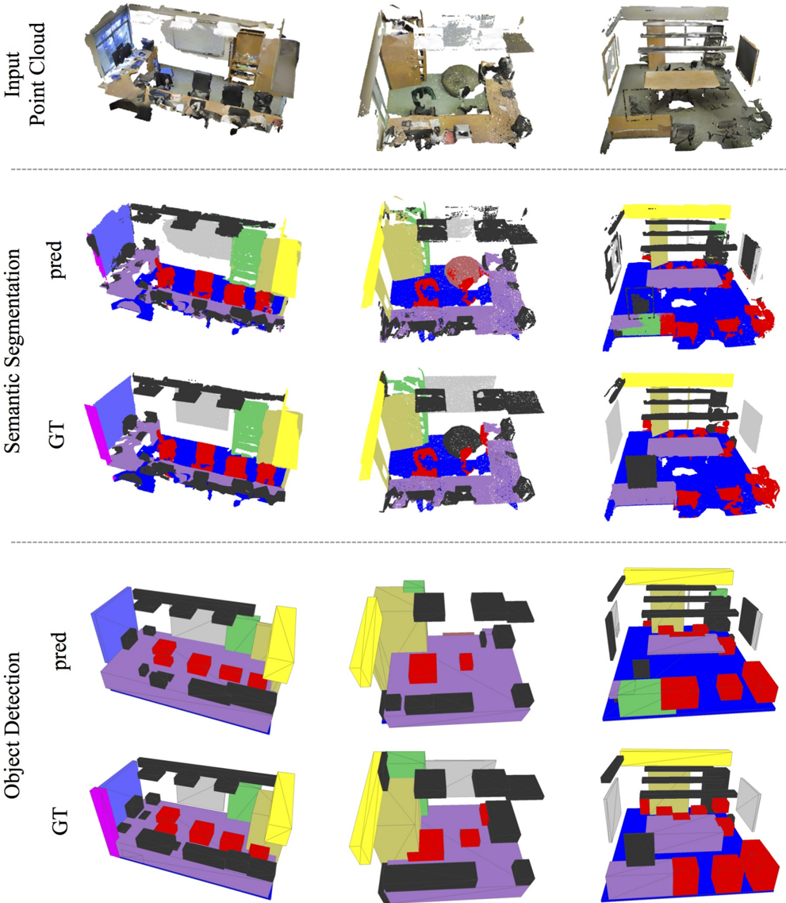
Figure 24. Examples of semantic segmentation and object detection. First row is input point cloud, where walls and ceiling are hided for clarity. Second and third rows are prediction and ground-truth of semantic segmentation on points, where points belonging to different semantic regions are colored differently (chairs in red, tables in purple, sofa in orange, board in gray, bookcase in green, floors in blue, windows in violet, beam in yellow, column in magenta, doors in khaki and clutters in black). The last two rows are object detection with bounding boxes, where predicted boxes are from connected components based on semantic segmentation prediction.
Figure 24. Examples of semantic segmentation and object detection. First row is input point cloud, where walls and ceiling are hided for clarity. Second and third rows are prediction and ground-truth of semantic segmentation on points, where points belonging to different semantic regions are colored differently (chairs in red, tables in purple, sofa in orange, board in gray, bookcase in green, floors in blue, windows in violet, beam in yellow, column in magenta, doors in khaki and clutters in black). The last two rows are object detection with bounding boxes, where predicted boxes are from connected components based on semantic segmentation prediction.